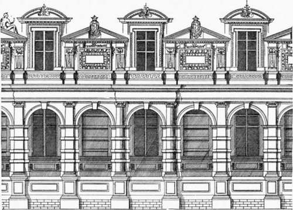
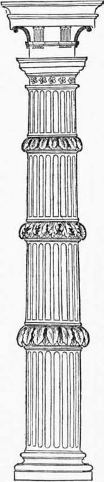
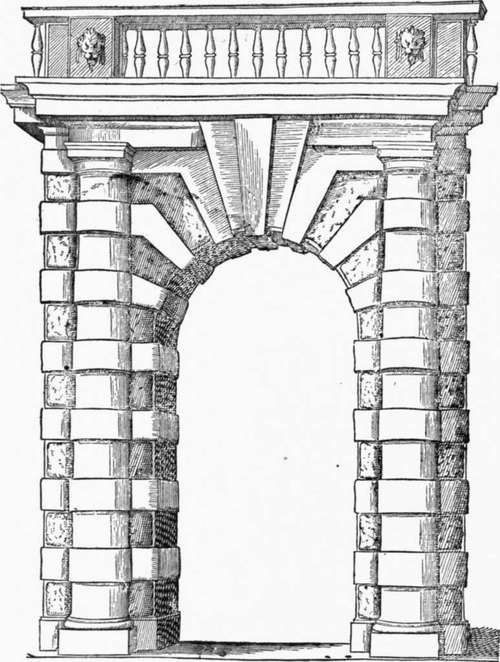
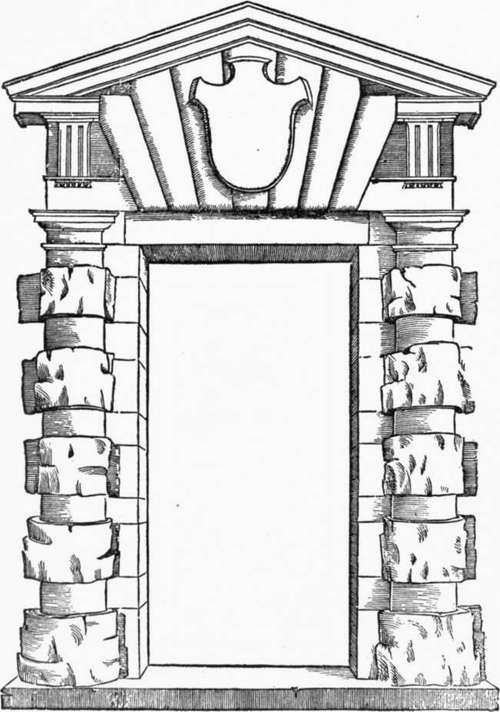

Lescot And De L'Orme. Part 3
Description
This section is from the book "Character Of Renaissance Architecture", by Charles Herbert Moore. Also available from Amazon: Character of Renaissance Architecture.
Lescot And De L'Orme. Part 3
The external fagade (Fig. 120) has a single story with an attic of broken outline, and in it the architect made use of a peculiar form of Ionic column of which he speaks1 as follows : " I make here a short digression to speak of the Ionic columns which I have employed in the above-mentioned palace of her Majesty the Queen Mother.2 . . . The said columns are sixty-four in number on the side facing the garden, and each one is two feet in diameter at the base. They are not all of one piece, since I could not find so large a number of such height as was necessary. . . . I have fashioned them as you see (Fig. 121), and with suitable ornaments to hide the joints ; which is an invention that I have never yet seen in any edifice either ancient or modern, and still less in our books of architecture. I remember to have made nearly the same in the time of his late Majesty Henry II, in his chateau of Villers Cotterets, in the doorway of a chapel which is in the park, and it was very graceful, as you may judge from the figure which I give." Further on he proposes that this shall be called the French order, saying: " If it was allowable for the architects of antiquity, in different nations and countries, to invent new columns, as the Romans invented the Tuscan and the Composite, the Athenians the Athenian, and, long before the said Romans, those of Doris the Doric, of Ionia the Ionic and Corinthian, who shall forbid us Frenchmen from inventing some, and calling them French, as those might be called which I have invented and used in the porch of the chapel of Villers Cotterets ? " Of this column De l'Orme, in his book, gives several variants, showing how the salient drums, or rings, may be variously ornamented or left plain, or may be varied in their proportions ; and he gives also a design for a doorway (Fig. 122)1 in which he employs a Tuscan order treated in this way.
Fig. 120.—Tuileries, from Du Cerceau.
Fig. 121.— De l'Orme's column.
1 Op. cit., p. 156.
2 The Tuileries was designed by De l'Orme for Catherine de Medicis.
It is hard to conclude what to think of De l'Orme's claim to this column as his own invention, and of his statement that he had never seen one of its kind in any building, or in any book of architecture; for such a column was not a new thing, though it may not before have been used in France. Several examples of practically the same column occur in Serlio's book, which was published in 1537 when ^e l'Orme was but twenty-two years of age,2 one of which, in a design for a doorway, is here (Fig. 123) reproduced.
Fig. 122. — De l'Orme's doorway.
Fig. 123. — Doorway, Serlio.
Of this doorway Serlio says: " Although Doric doorways may be designed in other ways, yet most men are pleased with novelty, and with that which is not too common, and they have satisfaction especially from that which, though being mixed, still retains its character, as in this doorway where, although the column, the frieze, and other members are broken, and covered with rustic work, nevertheless the form is seen well defined in all its proportions." 3 He does not affirm that this novelty was his own invention, but he seems to imply that it was. However this may be, he was writing long before De l'Orme could have produced such a column as his design shows. The chateau of Villers Cotterets built for Henry II, in which De l'Orme remembered to have made columns somewhat like those of the Tuileries, could not have been begun before 1547, the year of Henry's accession, and ten years after Serlio's book was published.
1 Op. cit., facing p. 240.
2 Assuming that De l'Orme was born in the year 1515. Cf. Berty, op. cii., p. 1. 3 Op. cit., bk. 4, p. 26.
Such an example may well have suggested to the architects of the Renaissance the idea embodied in Serlio's cut. Sansovino made use of this form of column in the fagade of the Zecca in Venice, which was commissioned by the Council of Ten in 1535, and at Genoa, in the wall that was built to enlarge the circuit of the city, there is a portal bearing the date 1553, in which the scheme figured by Serlio is carried out. This peculiar column had therefore undoubtedly been in existence, both in a book of architecture and in actual monuments, before De l'Orme was writing. It is, of course, quite possible that he may have devised his scheme in ignorance of the Italian examples, but whether he did or not is for us a matter of little importance. It is, I think, an architectural monstrosity, and reflects little credit on its designer.
An ancient adumbration of this form of column occurs in the Porta Maggiore in Rome, where it has the appearance of an unfinished work, the drums being roughly shaped to be finished after they were set up, in the customary ancient manner.
It may be further remarked concerning De l'Orme's claim to this column as his own invention, that it expresses an idea which was at the bottom of most of the architectural misconceptions and mistakes of the Renaissance, the idea that architectural excellence may result from independent personal effort to be original. I think it may be said that the artistic aberrations of the Renaissance arose largely from this false notion. The conscious effort to be original in architecture is inevitably disastrous. The personal contributions of individuals in architectural development consist of little more than small improvements on lines of endeavour common to large bodies of men. The aggregate of such improvements finally become conspicuous, and mark fundamental changes of architectural styles ; but the part of any individual in such changes is hardly noticeable. Noble architecture has always been, and must, I think, always be, mainly a social, communal, and national, not a personal product. De l'Orme failed to consider that the ancient orders were not inventions of individual designers, but the outcome of a process of evolution toward which the ingenuity of large numbers of men through long periods of time had contributed. He thought that he might himself invent a new order, and call it French. He ought rather to have called it by his own name, for it was not French in the sense of being a product of the collective French genius. Had he and his contemporaries had more discernment, they might have realized that a true French order was already in existence in that very Gothic art which they vilified, that the shaft and its load of the twelfth-century national style was such an order, a true evolution out of the ancient orders superbly adapted to new conditions.1
1 Cf. my Development and Character of Gothic Architecture, p. 304 et seq.
Continue to: